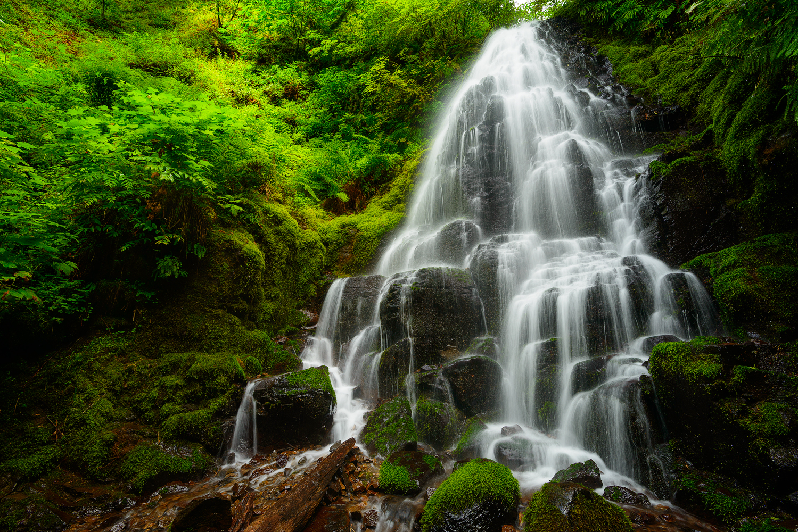
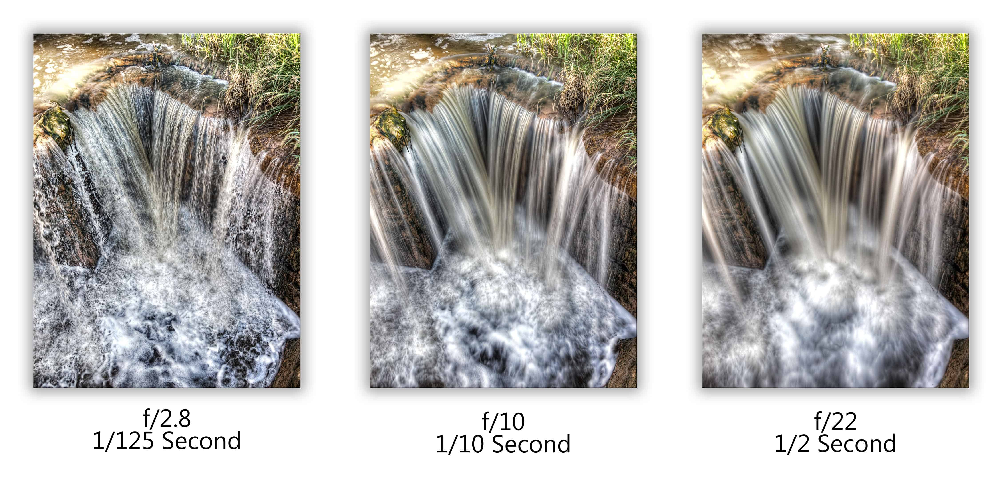
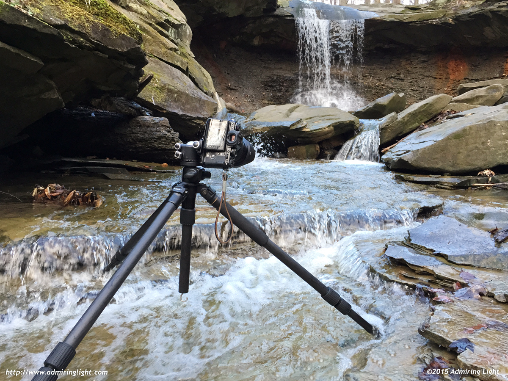
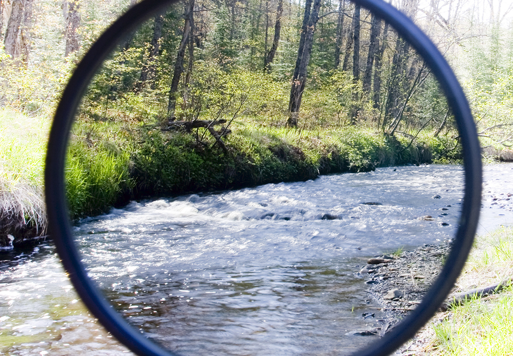
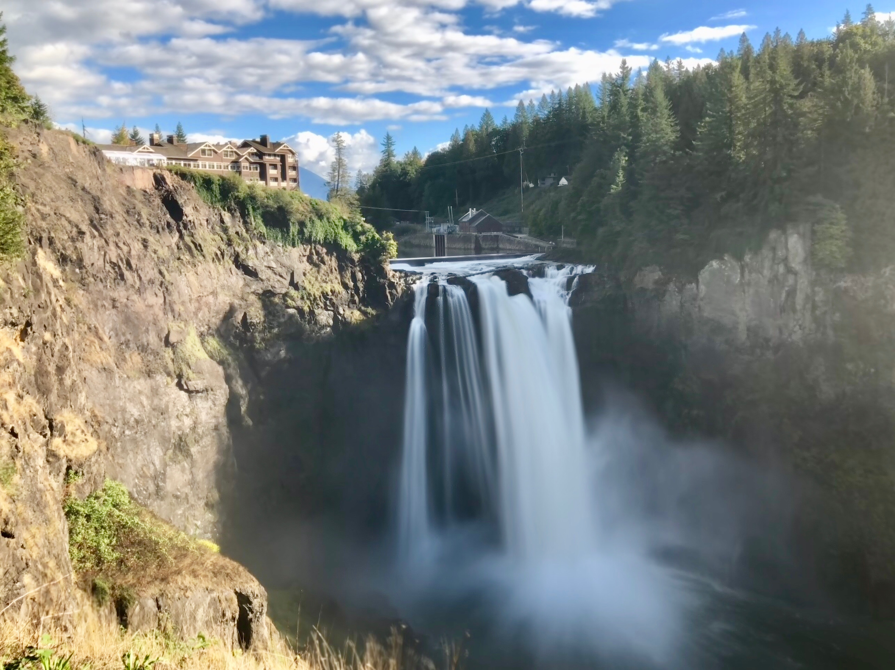
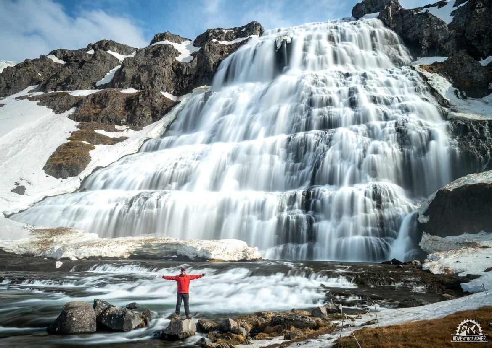

22 Oct 2019
Author : Nathachai
การถ่ายภาพน้ำตก คนที่เริ่มต้นถ่ายจะคิดไม่ค่อยออกว่าจะถ่ายยังไง ถ่ายน้ำตกต้องมีอะไรบ้าง จะต้องรู้เรื่องอะไรบ้าง ทำยังไงถึงจะถ่ายรูปน้ำตกให้ออกมาสวย เดี๋ยววันนี้เรามาเริ่มต้นด้วยกันเนอะ
หนึ่งในสิ่งที่น่าสนใจที่สุดเกี่ยวกับการถ่ายภาพน้ำตกก็คือ การมองเห็นถึงความเคลื่อนไหวของน้ำตก ละออกที่ค่อย ๆ ลอยออกมา เส้นของน้ำที่ไหลโค้งไปมาอย่างสวยงาม มันทำให้เรารู้สึกถึงออร่าของธรรมชาติและตื่นเต้นเสมอ
กุญแจสำคัญในการจับภาพการเคลื่อนไหวก็คือ “การตั้งค่าถ่ายภาพน้ำตก” เพราะการตั้งค่าแต่ละแบบจะให้ผลของภาพที่แตกต่างกันออกไป แล้วเราจะต้องตั้งค่าถ่ายภาพน้ำตกยังไงบ้างล่ะ?
สิ่งหนึ่งที่ต้องรู้แบบชัด ๆ ก่อนคือ น้ำตกทุกที่มีความแตกต่างกัน ทั้งสภาพแสง แวดล้อม ดังนั้นอยากให้เข้าใจชัด ๆ ตรงกันก็คือ “ไม่มีค่า Shutter Speed ที่ตายตัว” เพราะว่ามันเกี่ยวข้องกับความเร็วของสายน้ำด้วย แล้วก็ลักษณะของเอฟเฟคที่เราต้องการด้วย
แต่ผมอธิบายคร่าว ๆ ได้ว่าการใช้ความเร็วชัตเตอร์สำหรับการถ่ายน้ำตกก็ประมาณ 1 วินาที – 6 วินาทีก็เริ่มดีแล้ว ส่วนที่เปิดความเร็วชัตเตอร์นานกว่านั้น อยู่ที่ว่าเราอยากได้ภาพสายน้ำแบบไหน ยิ่งเปิดนาน สายน้ำก็จะเป็นเส้นฟุ้ง ๆ มากขึ้น
อย่างที่บอกข้างต้นคือการถ่ายภาพน้ำตกต้องใช้ความเร็วชัตเตอร์ประมาณ 1 วินาที และอาจจะนานกว่านั้น ดังนั้นการที่มีความเร็วชัตเตอร์ช้าแบบนี้ ต้องมีขาตั้งที่มั่นคง ไม่ทำให้กล้องสั่นไหวเวลาที่ถ่ายภาพ
การถ่ายภาพน้ำตกก็เหมือนกับการถ่ายภาพ Landscape ทั่วไป เราจะใช้ ISO ให้น้อยที่สุด เพื่อช่วยให้เราสามารถที่จะใช้ความเร็วชัตเตอร์ได้นานขึ้น
ถ้าหากว่าเราต้องการให้แสงเข้ากล้องน้อย ๆ เพื่อที่จะใช้ความเร็วชัตเตอร์ได้นานขึ้น เราต้องใช้รูรับแสงแคบที่สุดเท่าที่เราจะทำได้ครับ
แต่!! การใช้รูรับแสงแคบสุด จะทำให้เกิด Diffraction ในภาพ ทำให้ภาพไม่ได้คมที่สุดนะ (ถ้าอธิบายตรงนี้จะยาว) เอาเป็นว่าให้เข้าใจแบบนี้ครับ
ถ้าหากว่าเราต้องการลดแสง + ภาพคมด้วย -> F8 ถึง F11 แต่แน่นอนว่าแสงมันก็จะเข้ากล้องเยอะขึ้น และอาจจะใช้ความเร็วชัตเตอร์ต่ำไม่ได้ ดังนั้นถ้าเลือกวิธีนี้จะต้องมีอุปกรณ์ช่วยอีกหนึ่งอย่าง ดูในข้อต่อไปครับ
หากว่าเรายังไม่สามารถลดแสงตามที่ต้องการได้แม้ว่าจะตั้งค่ากล้องไปแล้ว แสงยังมากอยู่ เราต้องใช้แผ่นฟิลเตอร์พวกนี้ในการตัดแสงหรือลดแสงลงครับ นั่นคือ ND Filter พวกนี้จะทำให้แสงเข้ากล้องน้อยลง และทำให้เราใช้ความเร็วชัตเตอร์ได้นานขึ้น
นอกจากนี้ตัว Polarize Filters จะช่วยตัดแสงสะท้อน พวกไฮไลท์ต่าง ๆ ทำให้ภาพของเราเนี๊ยบขึ้นกว่าเดิมเยอะครับ สีสันอิ่ม มีชีวิตชีวามากขึ้น
การถ่ายภาพ Landscape ผมย้ำเสมอในหลาย ๆ บทความว่าต้องเลือกช่วงเวลาให้เหมาะสม การถ่ายภาพน้ำตกก็เหมือนกัน มันเป็นหนึ่งในภาพ Landscape เราต้องเลือกว่าสถานที่ตรงนั้นเนี่ย เวลาไหนเหมาะกับการถ่ายภาพ
โดยส่วนใหญ่ถ้าถ่ายภาพ Landscape เราจะเลือกช่วงที่แดดไม่แรงมากนัก เพราะถ้าแดดแรงมาก มันจะมีคอนทราสต์เยอะ (ส่วนมืดกับส่วนสว่างต่างกันเยอะ) สังเกตได้ถ่ายภาพช่วงเที่ยง แดดเปรี้ยง ส่วนที่สว่างก็จ้าเลย ส่วนที่มืด ก็มืดแบบเน้น ๆ ดังนั้นพอเราไปถ่ายภาพ Landscape พวกใบไม้ ก้อนหินที่มีน้ำอยู่ มันจะมีไฮไลท์เยอะมาก แสงจะสว่างมากกกกก
ที่ผ่านมาผมได้เกริ่นด้านเทคนิคไปหมดแล้ว แต่สิ่งที่ขาดอยู่คือเรื่องความคิดสร้างสรรค์ ศิลปะ องค์ประกอบภาพ การถ่ายภาพน้ำตกให้มีความน่าสนใจนั้นเราก็ต้องเลือกที่จะจัดองค์ประกอบภาพให้มีความน่าสนใจ
ส่วนใหญ่เวลาที่เราเห็นน้ำตกตรงหน้าเนี่ย เราก็มักจะถ่ายมันมาตรง ๆ แบบนั้น ซึ่งอยากจะบอกว่ามันก็สวยแหละ แต่ทุก ๆ คนก็ถ่ายภาพแบบนั้นกัน ทำให้เราไม่มีเรื่องราวแปลกใหม่อะไรไปอวดคนอื่น หรือมันมีมุมอลังการงานสร้างอีกหลายมุมที่เราต้องสร้างมันขึ้นมา ถ่ายทอดมันขึ้นมาให้ได้ ดังนั้นเราอาจจะต้องลองลุยน้ำลงไป หรือหามุมใหม่ ๆ ต้องลงทุนใช้เวลากับมันนะในการเดินหามุมใหม่ รับรองว่าภาพเราจะดูน่าสนใจแน่นอน